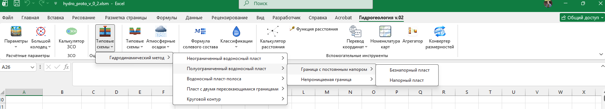
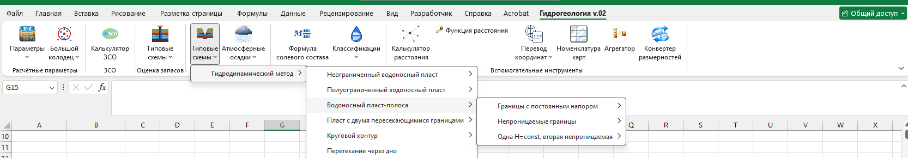

Одна и та же гидродинамическая логика решает две смежные инженерные задачи: оценку эксплуатационных запасов подземных вод и прогноз водопритоков в карьеры, котлованы и горные выработки.
Типовые схемы для оценки запасов подземных вод — выбор схемы по геологическим условиям, до 4 уровней вложенности меню. Гидродинамический метод: неограниченный пласт, полуограниченный пласт, пласт-полоса, пласт с двумя пересекающимися границами, круговой контур. Каждая схема доступна в напорном и безнапорном варианте.

Каждая ячейка — отдельная готовая формула. Мастер аргументов подставит нужные обозначения при вставке.
| Расчётная схема | Безнапорный пласт | Напорный пласт |
|---|---|---|
| Неограниченный пласт — изолированный | ✓ | ✓ |
| Неограниченный пласт — с перетеканием | ✓ | ✓ |
| Полуограниченный — граница H=const | ✓ | ✓ |
| Полуограниченный — непроницаемая граница (Q=0) | ✓ | ✓ |
| Пласт-полоса — обе границы H=const | ✓ | ✓ |
| Пласт-полоса — обе границы непроницаемы | ✓ | ✓ |
| Пласт-полоса — одна H=const, другая непроницаема | ✓ | ✓ |
| Пласт-угол (2 границы) — обе H=const | ✓ | ✓ |
| Пласт-угол (2 границы) — обе непроницаемы | ✓ | ✓ |
| Пласт-угол (2 границы) — одна H=const, другая непроницаема | ✓ | ✓ |
| Круговой контур — граница H=const | ✓ | ✓ |
| Круговой контур — непроницаемая граница | ✓ | ✓ |

Ветка «Перетекание через дно» решает типовую задачу прогноза водопритоков в карьеры и горные выработки. Горнодобывающие предприятия и проектировщики карьеров/шахт получают тот же набор готовых гидродинамических формул, что и гидрогеологи — без отдельного инструмента.
| Расчётная схема | Безнапорный пласт | Напорный пласт |
|---|---|---|
| Неограниченный пласт — изолированный | ✓ | ✓ |
| Полуограниченный — граница H=const | ✓ | ✓ |
| Полуограниченный — непроницаемая граница | ✓ | ✓ |
| Пласт-полоса — обе границы H=const | ✓ | ✓ |
| Пласт-полоса — обе границы непроницаемы | ✓ | ✓ |
| Пласт-полоса — одна H=const, другая непроницаема | ✓ | ✓ |
| Пласт-угол (2 границы) — обе H=const | ✓ | ✓ |
| Пласт-угол (2 границы) — обе непроницаемы | ✓ | ✓ |
| Пласт-угол (2 границы) — одна H=const, другая непроницаема | ✓ | ✓ |
| Круговой контур — граница H=const | ✓ | ✓ |
| Круговой контур — непроницаемая граница | ✓ | ✓ |
+ отдельная функция «Перетекание через дно» — 23-я схема группы · нажмите ✓, чтобы открыть справку по функции
Расчёт водопритоков в карьер за счёт атмосферных осадков — рядом с типовыми схемами, в той же группе «Оценка водопритоков».
По формуле Абрамова: W = 1000·Hd·α·F, результат — м³/сут.
W = α·β·hc·F/tc, результат — м³/ч.
W = q·α·F·η, результат — м³/ч.
По формуле М.В. Молокова, результат — м³/(ч·км²).
Калькулятор зон санитарной охраны и оценка химического состава подземных вод.